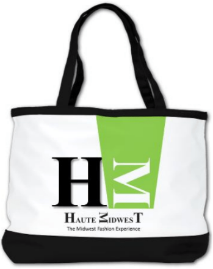
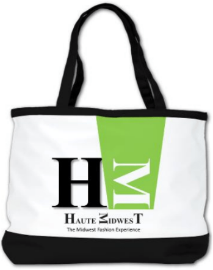

WordPress Template Customization: Haute Midwest Fashion Magazine
hautemidwest.wordpress.com
Featured WordPress Customizations
Project Detail: Haute Midwest Magazine
The website cover / banner shown above is a completely original design. It is an enlarged variation of the first logo that I created for Haute Midwest. How did the design come to fruition?
This project utilizes the WordPress content management system. It implements the Maisha WordPress template (theme). This project included extensive graphic design and online copywriting. The cover image featured above was designed for the MPTU website and is based on a Fotor template. The variations of the logo banner shown at the left above were created to amplify the MPT name and link related sites to mypsychteacheruniversity.com.
Featured Magazine Covers

All of the above magazine covers were designed by Shenica Graham. For all except one of the covers (March 2019 apparel by Ra Sha), she designed and constructed the apparel worn by the models. Shenica styled the models, took the photos, and created the cover layouts.
 

My Tupperware Facebook Group
Almond Berry Spinach Salmon Pinwheels

« Join my Tupperware Facebook Group for recipes and more!